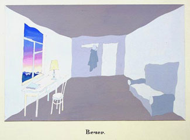
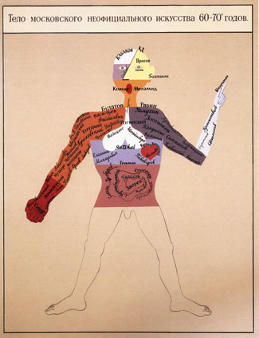
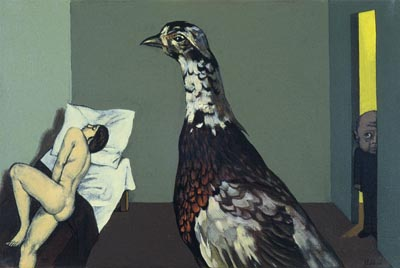
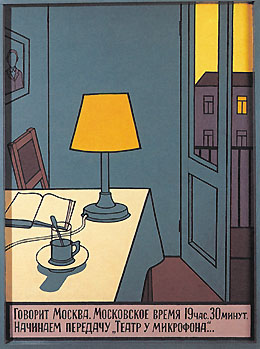
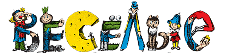
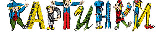
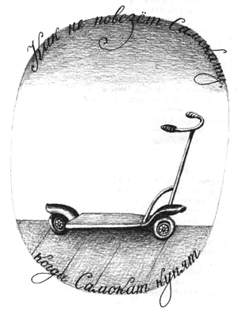
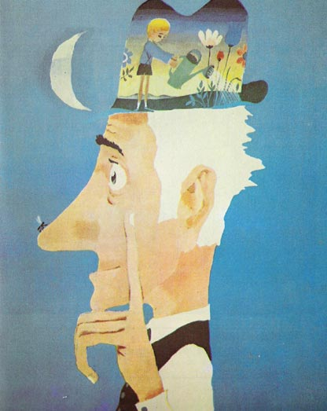
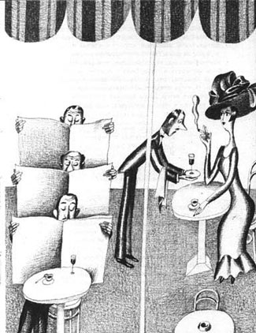
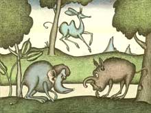

САМЫЙ ГЛАВНЫЙ ИЛЛЮСТРАТОР
О надвигающейся выставке Виктора Пивоварова...
Кто еще не в курсе, в пятницу 15го в Москве открывается новая выставка Пивоварова.
Не ходить нам с вами никак нельзя. Этому человеку опять придется посвятить отдельную колонку — животрепещущие темы подождут. Боюсь, правда, не найти слов, но попытка — не пытка. Меня однажды (в смысле один единственный раз) сшибло с ног картиной в музее, это был лист из альбома «Лицо», причем самый простой, на желтоватой бумаге обведенный простым карандашом и заштрихованный синим контур головы, и что-то внизу написано. То есть буквально, завернул за угол и чуть не упал.

Странно вообще числить Пивоварова авангардистом, слово уж больно для такого случая затертое, но если уж на то пошло, ни у кого концептуальное искусство не выходит так естественно. Именно выходит, как выдох; у абсолютного большинства его коллег концепт — все-таки продукт деятельности мозга, но не легких.
совсем чуть-чуть Виктор Дмитриевич из скромности промазал

Нынче Пивоваров, слава богу, совсем не тот, что в 70е, фантастическая вот эта легкость куда-то делась, зато мастерство до каких-то поднялось совершенно заоблачных высот.

Пару лет назад его выставка в ЦДХ заставила меня пересмотреть свои представления о натюрморте как об унылом и никчемном упражнении; собственно, его работы мертвой натурой назвать не поворачивается язык.

Нам он, конечно, дороже как детский иллюстратор. Самый главный, пожалуй что.


Что важно, в этой своей ипостаси он совершенно тот же.


Довольно много интересного можно посмотреть здесь, а также здесь и здесь.

Пользуясь случаем, объявление: приобрету за любые деньги «Мою Вообразилию» Заходера / Пивоварова. Очень нужно. Прикреплю, как принято у меня на исторической родине, себе на лоб и буду ходить.
